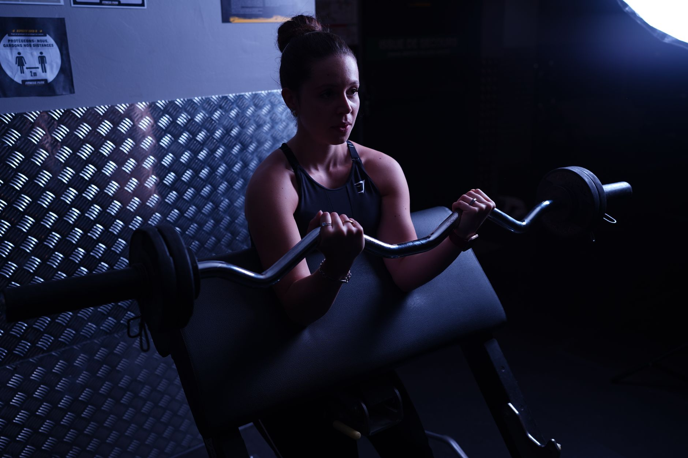

Inicio/Artículos/Suplementos · Mitos virales
Creatina para mujeres: la "moda" que en realidad se apoya en décadas de evidencia
9 min de lectura · Actualizado 19 de agosto de 2026 · Por Miguel Lopez

Hace unos años, la creatina era casi territorio exclusivo de culturistas y hombres en el gimnasio. En 2026 es distinto: cada vez más mujeres, desde deportistas hasta mujeres en la perimenopausia, la han incorporado a su rutina, empujadas por vídeos virales que hablan de fuerza, energía y hasta claridad mental. La buena noticia es que, a diferencia de otros suplementos de moda, la creatina cuenta con una de las bases de evidencia científica más sólidas y antiguas de toda la nutrición deportiva.
Qué es la creatina y por qué se habla tanto de ella
La creatina es una molécula que el propio cuerpo produce (principalmente en el hígado y los riñones) y que también se obtiene de la carne y el pescado. Se almacena sobre todo en el músculo, donde actúa como una reserva rápida de energía para esfuerzos cortos e intensos. Suplementarla aumenta esas reservas por encima de lo que consigue solo la dieta.
Durante mucho tiempo se asoció casi exclusivamente al levantamiento de pesas y al rendimiento deportivo masculino. Pero la investigación en mujeres, incluidas atletas, mujeres en distintas fases del ciclo menstrual y mujeres perimenopáusicas y posmenopáusicas, ha crecido notablemente en los últimos años, y los resultados son en general positivos.
Qué dice la evidencia sobre sus beneficios
En fuerza y rendimiento, es, junto con la proteína, uno de los suplementos con más respaldo para mejorar la fuerza y la potencia en entrenamientos de resistencia (pesas).
En masa muscular, combinada con entrenamiento de fuerza, se asocia a ganancia y mantenimiento de masa muscular magra, algo especialmente relevante a partir de la perimenopausia, cuando la pérdida de masa muscular se acelera.
En salud ósea, algunos estudios sugieren un posible papel de apoyo a la densidad ósea cuando se combina con ejercicio de fuerza, un área de interés creciente para la salud de la mujer en la menopausia.
En función cognitiva, hay evidencia preliminar, todavía en desarrollo, de que podría ayudar en tareas que exigen memoria de trabajo, sobre todo en situaciones de falta de sueño o estrés. No es un "potenciador cerebral" milagroso, pero es una línea de investigación activa.
Sobre el ciclo menstrual y la menopausia: la investigación específica en mujeres es más reciente que en hombres, pero ha crecido mucho desde 2020. Por ahora no hay evidencia de que la creatina deba evitarse en ninguna fase del ciclo menstrual ni de que sea menos segura por razón de sexo.
El mito que más frena a las mujeres: la retención de líquidos
Es la preocupación número uno que se repite en comentarios y mensajes: "¿engorda?" o "¿hincha?". Vale la pena separarlo con claridad:
- La creatina atrae agua hacia el interior de la célula muscular, no hacia debajo de la piel. El aumento de peso inicial que reportan algunos estudios (normalmente 0,5-1,5 kg en las primeras semanas) es agua intramuscular, no grasa ni "hinchazón" visible.
- No hay evidencia de que provoque hinchazón facial ni retención de líquidos generalizada a las dosis habituales en personas sanas.
- Ese pequeño aumento de peso en la báscula suele dejar de preocupar en cuanto se entiende de dónde viene: es parte de cómo funciona el suplemento, no un efecto secundario negativo.
Cómo se diseñan los estudios sobre creatina
La forma más estudiada, con diferencia, es el monohidrato de creatina. La mayoría de los ensayos clínicos, también los realizados en mujeres, utilizan una dosis de mantenimiento de 3 a 5 gramos diarios, sin necesidad de una fase inicial de "carga" con dosis más altas: la diferencia es que, sin esa fase, saturar los depósitos musculares toma unas semanas más (entre 3 y 4 semanas) en lugar de unos pocos días. El momento del día en que se toma no parece ser una variable determinante en los resultados observados, y el efecto se estudia siempre en el contexto de un entrenamiento de fuerza regular: sin ese estímulo, el impacto sobre fuerza y masa muscular medido en los estudios se reduce considerablemente.
Esta información describe cómo está diseñada la investigación disponible, no una pauta de uso. Cualquier decisión sobre si tomar un suplemento, en qué cantidad y de qué forma corresponde evaluarla con un profesional de la salud.
Efectos secundarios y quién debería tener precaución
A las dosis estudiadas en la literatura científica, la creatina monohidrato aparece como uno de los suplementos con perfil de seguridad más estudiado, con décadas de investigación en distintas poblaciones. Los efectos secundarios reportados con más frecuencia son molestias digestivas leves, generalmente asociadas a tomar dosis altas de una sola vez.
La evidencia señala que ciertos grupos requieren especial precaución y valoración médica previa: personas con enfermedad renal previa, personas que toman medicación que afecta la función renal, y mujeres embarazadas o en periodo de lactancia, para quienes la evidencia de seguridad todavía es limitada.
Nuestra conclusión
A pesar de su explosión reciente en redes, la creatina no es una moda pasajera: es uno de los suplementos deportivos con más y mejor evidencia científica, también en mujeres. El miedo a la retención de líquidos no se sostiene con los datos disponibles. Su efecto más consistente en la investigación aparece siempre asociado al entrenamiento de fuerza, no como sustituto de este, y ante cualquier duda médica concreta, la conversación con un profesional sanitario es insustituible.
- ¿La creatina engorda o hincha a las mujeres?
- Puede producir una retención de agua intramuscular de entre 1 y 2 kg en las primeras semanas, según reportan los estudios; es un efecto conocido de cómo actúa el suplemento (no es grasa) y no suele traducirse en hinchazón visible ni en aumento de grasa corporal.
- ¿Qué dosis se usa en los estudios sobre creatina en mujeres?
- La dosis estándar utilizada en la investigación es de 3 a 5 gramos diarios de monohidrato de creatina, sin diferencias relevantes reportadas por sexo. Los ensayos con fase de carga usan dosis más altas los primeros días; los que no la incluyen tardan más semanas en alcanzar la saturación de los depósitos musculares. Qué dosis, en qué forma y con qué frecuencia es una decisión que corresponde evaluar con un profesional de la salud.
- ¿Es segura para los riñones?
- En personas sanas, sin enfermedad renal previa, la evidencia acumulada durante más de dos décadas no muestra daño renal a las dosis estudiadas. Quien tenga una enfermedad renal preexistente debería consultarlo con su médico antes de considerar cualquier suplementación.
- ¿Sirve la creatina si no se entrena fuerza?
- Hay estudios que muestran beneficios cognitivos y de energía cerebral incluso sin entrenamiento de fuerza, pero su efecto más consistente y estudiado (fuerza y masa muscular) aparece siempre en combinación con ejercicio de resistencia.
- ¿Importa el momento del día en los estudios?
- Los ensayos disponibles no muestran que el momento del día en que se toma sea una variable determinante para los resultados; lo que sí aparece asociado a mejores resultados en la investigación es la constancia diaria, más que un horario específico.
- ¿Es segura la creatina a largo plazo?
- La evidencia disponible, incluida en mujeres, no muestra daño renal ni hepático en personas sanas que participaron en estudios con las dosis habituales (3-5 g/día) durante periodos prolongados. Quien tenga una enfermedad renal preexistente debe consultar con su médico antes de considerar su uso.
Preguntas frecuentes
Fuentes
Enlaces a la fuente original, para que puedas comprobarlo por tu cuenta.
Miguel Lopez
Periodista independiente, no profesional sanitario. Escribe sobre tendencias de salud y fitness citando siempre las fuentes primarias, para que puedas comprobarlo por tu cuenta. Más sobre el sitio.